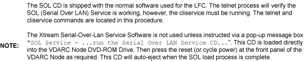
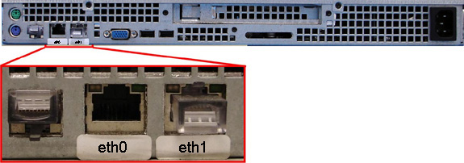
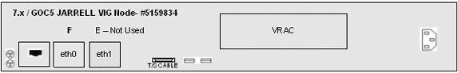

Operating Documentation
Direction 5193575-800, Rev# 5
LightSpeed 7.X Service Information - Adv
Operating Documentation |
| Required Persons | Preliminary Reqs | Procedure | Finalization |
|---|---|---|---|
| 1 | Timing Not Applicable | 2 hours | 20 mins |
This module describes the procedures used to replace the VDARC Node (Westville or Jarrell version) in the GOC5 VCT Operator Console. After the VDARC Node has been replaced and loaded with the OS and Apps software, several tests are required:
Communication and verification within the VDARC Node
Communication to the VIG Nodes
Communication to the Disk Array
Recon Data Path Diagnostic
Resave of the System State Reconfig Info
Sanity Scans
| NOTE: | Jarrell VDARC and Jarrell IG Nodes require software release 06MW29.7 or more recent. |
| Last Revised: | 12 May 2008 |
| Item | Qty | Effectivity | Part# | Manufacturer | |
|---|---|---|---|---|---|
| Medium Phillips Screwdriver | 1 | - | - | - | |
| Item | Qty | Effectivity | Part# | Manufacturer | |
|---|---|---|---|---|---|
| VDARC Node - Westville | 1 | - | 5114523 | Omni Tech Corp - Dedicated Computing | |
| VDARC Node - Jarrell | 1 | - | 5159833 | Omni Tech Corp - Dedicated Computing | |
| All cable connector screw-locks must be finger-tightened, only. Do NOT use any tool to tighten cable screw-locks. | |
| Follow ALL required safety and PPE procedures customary for your organization, when working on this product. | |
| Condition | Reference | Eff |
|---|---|---|
Jarrell VDARC and Jarrell IG Nodes require software release 06MW29.7 or more recent | - | - |
Understand the conventions used in this publication | - | |
Only trained service personnel should service the GE CT Scanner. | - | - |

Select one of the following methods to Power OFF the Operator Console:
If Applications are up, select the Shutdown icon, then select [Shutdown] .
| (For 06MW03.X Software) Wait 1-2 minutes after the “System halted” message appears, to allow the DARC Node to properly power-down. Future SW releases (e.g., 06MW29.7) have corrected this issue. | |
If Applications are down, open a Unix Shell at the Toolchest. Type:
{ctuser@hostname} halt
The Operator Console monitor will display a System halted message when it is acceptable to power OFF the Operator Console.
Power OFF the Operator Console at the front panel switch. See Illustration 1.
| NOTE: | Do not turn OFF the VDARC Rear Power Switch. |
Illustration 1: Operator Console Power Switch

Remove the front and rear Operator Console covers.
Verify each cable label is present and clearly marked. If necessary, add a label for clarity.
Disconnect all rear VDARC Node cables.
Refer to Table 1 for cables to be removed. (Please refer to Illustration 2 or Illustration 3 below for VDARC Node Types and connection information.)
Table 1: Cable to Be Disconnected at VDARC Node
| Reference Designator | VDARC Connection | Connection |
| A or IG1 | IG1 Ethernet port 1 | IG 1 Node Ethernet port 0 |
| B or IG2 | IG2 Ethernet port 0 | IG 2 Node Ethernet port 0 |
| C or IG3 | IG3 Ethernet port 3 | IG 3 Node Ethernet port 0 |
| E or Host | Host Ethernet port (4 for Westville) | Host Computer port C |
| Host Ethernet port (2 for Jarrell) | ||
| Channel 1 RX | VDIP1 | Bulkhead J52 |
| (left side set as viewed from rear) | (right as viewed from rear) | |
| Channel 2 RX | VDIP2 | Bulkhead J52 |
| (right side set as viewed from rear) | (left as viewed from rear) | |
| DIP Scan Abort | J53 DIP Scan Abort | ICOM J53 |
| RHARD | J54 RHARD | ICOM J54 |
| Power | Power | Power Distribution Box |
| Channel 1 or B | SCSI Adapter B | Disk Array SAF-TE Ch. 1 |
| Channel 2 or A | SCSI Adapter A | Disk Array SAF-TE Ch. 2 |
Illustration 2: “Jarrell” VDARC Node #5159833
(Sheet 1 of 2)

(Sheet 2 of 2)

Illustration 3: “Westville” VDARC Node #5114523
(Sheet 1 of 2)

(Sheet 2 of 2)

Remove and retain the four (4) front panel mounting screws.
Slide the VDARC Node out of the Operator Console from the front.
Refer to 5115335SCH - GOC5 Interconnect, as required.
Slide the replacement VDARC Node into the Operator Console from the front.
Replace the (4) front mounting screws on the front panel of the VDARC Node.
Reconnect the VDARC Node cables. See Illustration 2 or Illustration 3, depending on VDARC Node version.
At the rear panel of VDARC Node, verify the power switch is in the “ON” position.
Power ON the Operator Console at the front power switch.
Verify the VDARC Node front panel power LED is ON. If not, press the front panel power switch (hold 3-10 seconds) to apply power to the VDARC Node.
Verify that the VIG Node front panel power LED is illuminated. If not, press the front panel power switch (hold 3-10 seconds) to apply power to the VIG Node. See Illustration 4 or Illustration 5, depending on VIG Node version.
Illustration 4: “Jarrell” VIG Node #5159834
(Sheet 1 of 3)

(Sheet 2 of 3)

(Sheet 3 of 3)

Illustration 5: ”Westville” VIG Node #5114533-2
(Sheet 1 of 3)

(Sheet 2 of 3)

(Sheet 3 of 3)

At the Disk Array (JBOD), verify the two green LEDs at the rear panel are illuminated. If they are not, then press the two power switches at the rear panel, to apply power to the Disk Array. See Illustration 6.
Illustration 6: Rear Panel of the VCT Disk Array

Stop Applications software from auto-starting at the 5-second Pink Box.
The VDARC Node must be UP, to load the OS (Operating System) and DARC Application software. Perform the telnet command on the VDARC Node to verify communication, as follows:
At the Toolchest, with Application software down, open a Unix Shell.
Perform the telnet command to the VDARC Node from the Host Computer:
{ctuser@hostname} su -
Password: #bigguy
[root@hostname] service cliservice start
dpcproxy server will be reported as already running or restarted
[root@hostname]: telnet localhost 623
Trying 127.0.0.1...
Connected to localhost
*** Indicates cliservice proxy server is running ***
Escape character is '^]'.
Server: darc
Username: <Enter>
Password: <Enter>
Login successful *** Indicates the SOL connection is established ***
dpccli> exit
Connection closed by foreign host.
[root@hostname]
| NOTE: | If the telnet connection fails, refer to Telnet T/S Note. |
Confirm the Host Computer Software type. Examples are shown, the software version output should match the Software media to be loaded.
Open a Unix Shell.
Type the following to verify software version information. Examples are provided. The examples are not actual output.
| NOTE: | Jarrell VDARC and Jarrell IG Nodes require software release 06MW29.7 or more recent |
{ctuser@hostname} swhwinfo << for Apps Version
(year)MW(fiscal week).(fiscal day).hardware revision info here
.Example: 06MW29.7.V40_H_V64_G_GTL
| NOTE: | If the revisions do NOT match the software media to be
loaded, locate the proper software set. If the software set cannot
be found or ordered, a full LFC will be required for the Operator
Console. If the revisions match the software media to be loaded, continue with the load procedure. |
{ctuser@hostname} swhwinfo -o << for OS version
Release: GEHC/CTT Linux 4.3.16
Built: Tue Jul 12 12:29:10 CTD 2005
| NOTE: | Confirm that the results match the Operating System version and Software Build Date shown on the OS and Applications DVDs. |
The VDARC Node must be loaded with the OS and Application software from the Host Computer to the VDARC Node. Perform the VDARC Node OS (Operating System) load as described in the LFC (load From Cold) procedure for the software set being used. Perform the VDARC Node Application software load as described in the LFC (Load From Cold) procedure for the software set being used. Refer to the appropriate LFC procedure and follow the sub-sections after reading the DARC Subnet information outlined below:
| NOTE: | Jarrell VDARC and Jarrell IG Nodes require software release 06MW29.7 or more recent |
| NOTE: | The OS (Operating System) and Application software version loaded onto the VDARC Node must match the OS and Application software versions loaded on the Host Computer. |
Perform the VDARC Node OS (Operating System) load as described in the LFC (Load From Cold) procedure for the software set being used.
| NOTE: | If the OS software fails to load successfully on the VDARC Node from the Host Computer, refer to OS Load Work-Around with Disk Array (JBOD) OFF for work-around procedure and VDARC Stand-Alone OS Load procedure. |
Refer to the “LFC - DVD OS Installation on VDARC” section of the appropriate 7.X LFC Procedure.
| NOTE: | Jarrell VDARC and Jarrell IG Nodes require software release 06MW29.7 or more recent |
Perform an OS (LS VCT Console Operating System DVD) load on the VDARC Node from the Host Computer per the normal instructions.
Perform the VDARC Node Application load as described in the LFC (Load From Cold) procedure for the software set being used.
| NOTE: | If the DARC Application software fails to load successfully on the VDARC Node from the Host Computer, refer to DARC Apps Load Work-Around with Disk Array (JBOD) OFF for work-around procedure. |
Refer to the “LFC - CD-ROM VDARC Application Installation on Host Computer” section of the appropriate 7.x LFC Procedures.
Perform a VDARC Applications software load on the VDARC Node from the Host Computer per the normal instructions. Refer to the DARC Subnet Note below.
| NOTE: | DARC Subnet Address Information: The following procedure
should be performed if your customer Ethernet hospital backbone begins
with 172.16.0.xx, OR if the scanner will connect to a device with
an IP address of 172.16.0.xx.
|
If the VDARC Node software has completed successfully, skip to Verify Replacement VDARC Node to verify the VDARC Node.
If any problems arise during the VDARC Node OS software load, verify the correct media is installed or verify the Boot BIOS Order is correct. If VDARC Node OS load problems continue, perform the OS Load Work-around with Disk Array (JBOD) OFF. If problems still continue, perform the VDARC Stand-Alone OS Load procedure. The stand-alone procedure eliminates any external sources causing an issue but does not rule out media issues or internal VDARC Node issues.
| NOTE: | Jarrell VDARC and Jarrell IG Nodes require software release 06MW29.7 or more recent |
| NOTE: | If VDARC Node OS load failed, perform the OS Load Work-around with Disk Array (JBOD) OFF. Do Not perform this section if the VDARC Node has loaded the OS from the Host Computer successfully. |
Remove the rear cover from the Operator Console.
At the rear of the Disk Array (JBOD), locate the two green Power LEDs at rear panel. Press the two (2) power switches at rear panel to remove power from the Disk Array. See Illustration 7.
Illustration 7: Rear Panel of VCT Disk Array
Repeat the steps in Standard VDARC Load Procedure.
| NOTE: | Jarrell VDARC and Jarrell IG Nodes require software release 06MW29.7 or more recent |
If this work-around fails, perform the VDARC Stand-Alone OS Load per the following Section.
If this work-around is successful, at the Disk Array (JBOD) verify two green LEDs at rear panel are illuminated. If not, press two power switches at rear panel, to apply power to the Disk Array. See Illustration 7.
If any problems arise during the VDARC Node Apps software load, verify the correct media is installed or verify the Boot BIOS Order is correct. Remove the rear cover from the Operator Console.
| NOTE: | Jarrell VDARC and Jarrell IG Nodes require software release 06MW29.7 or more recent |
| NOTE: | If VDARC Node Apps Load failed, perform the DARC Node Load Work-around with Disk Array (JBOD) OFF. Do Not perform this section if the VDARC Node has loaded the Apps software successfully from the Host Computer. |
Verify the OS has been loaded on the VDARC Node, open a Unix Shell and type the following:
{ctuser@hostname} su -
Password: #bigguy
[root@hostname] rsh darc
[root@localhost root] exit
| NOTE: | If the VDARC login prompt [root@localhost root] is not present, then try reloading the VDARC Node OS again per the procedure. Always be sure the VDARC OS matches the Host OS already loaded. If issues persist perform the VDARC Stand-Alone OS Load procedure. |
At the rear of the Disk Array (JBOD), locate the two green Power LEDs at rear panel. Press the two (2) power switches at rear panel to remove power from the Disk Array. See Illustration 8
Illustration 8: Rear Panel of VCT Disk Array
Repeat the steps in Standard VDARC Load Procedure, step 2. Perform the VDARC Node Application load as described in the LFC (Load From Cold) procedure for the software set being used.
| NOTE: | Jarrell VDARC and Jarrell IG Nodes require software release 06MW29.7 or more recent |
| NOTE: | During the VDARC Apps software load, process errors may occur directly related to the Disk Array power off state. Ignore these errrors. |
If this DARC Apps load work-around is successful, at the rear panel of the Disk Array (JBOD) press two power switches to apply power to the Disk Array. See Illustration 8.
After the VDARC Node has completed rebooting, verify the DARC Apps software has been loaded on the VDARC Node. Open a Unix Shell and type the following:
{ctuser@hostname} su -
Password: #bigguy
[root@hostname] rsh darc
[root@darc] exit
| NOTE: | If the VDARC login prompt [root@darc] is not present, then the work-around has not been successful. Verify the telnet process from the Host to the VDARC Node is working and retry the load procedure. |
When the DARC Application Software is loaded with the Disk Array off, the Disk Array drivers are not loaded. Reboot the console at this time.
Once the system has rebooted, wait for the VDARC to come up.
Perform the following commands to repartition/create the Disk Array. Verify 8 disks are present. Visually verify the entire output is successful from the command script performed. The final output line ‘gre-raid success’ does not mean the Disk Array is good.
{ctuser@hostname} rsh darc
{ctuser@darc} sudo gre-raid -z -c
answer yes
{ctuser@darc} sudo gre-raid -a
{ctuser@darc} sudo gre-raid -q
| NOTE: | If the VDARC login prompt [root@darc] is not present, then the work-around has not been successful. Verify the telnet process from the Host to the VDARC Node is working and retry the load procedure. |
With Application Software Down, the VDARC Node must be checked to verify communication between the Host Computer and the VDARC Node. Perform ping and rsh commands on the VDARC Node, as follows:
| NOTE: | If the ping/rsh commands fail, refer to VDARC Port Communication T/S Note. |
At the Toolchest, with Application software down, open a Unix Shell.
Ping the VDARC Node:
{ctuser@hostname} ping darc
Verify ping is successful.
Output similar to the following will appear:
PING darc (172.16.0.2) from 172.16.0.1 : 56(84) bytes of data. 64 bytes from darc (172.16.0.2): icmp_seq=1 ttl=64 time=0.157 ms
Press <Ctrl+C> to stop ping process.
Output similar to the following will appear:
--- darc ping statistics --- 4 packets transmitted, 4 received, 0% loss,time 3000ms rtt min/avg/max/mdev = 0.134/0.168/0.209/0.031 ms
Remote Shell to the VDARC Node:
{ctuser@hostname} rsh darc
Last login: Thu Oct 9 11:17:35 on ttyS1
You have new mail.
{ctuser@darc} Verify ctuser@darc prompt is present.
(For 06MW03.x SW and greater) Security Shell to the VDARC Node:
{ctuser@hostname} ssh darc
Last login: Thu Oct 9 11:17:35 on ttyS1
You have new mail.
{ctuser@darc} Verify ctuser@darc prompt is present. If not, a reconfig (as root on the host) and [Accept] will be required to sync up the known_host files.
Exit from the DARC and become root.
Type: rsh darc
As root, type: vdip_menu -A
Verify all tests pass.
| NOTE: | The Unix Shell will be used again, so do not exit or close at this time. |
Remove the power for each VIG Node, then re-power each VIG Node with the VDARC Node up and able to Remote Shell (rsh darc).
At each VIG Node, verify the power is OFF. If power is On for any VIG Node, then press the front panel power switch (hold 3-10 seconds) to remove power to the VIG Node(s).
Wait 20 seconds.
At each VIG Node, press the front panel power switch (hold 3-10 seconds) to apply power to the VIG Node(s).
Wait two (2) minutes for the VIG Nodes to boot up.
The VDARC Node must be up to check the VIG Node(s). Perform ping and rsh commands on the VDARC Node, as follows:
| NOTE: | If the VIG Node ping/rsh commands fail, refer to VIG Port Communcation T/S Note. |
At the Toolchest, with Application software down, if necessary, open a Unix Shell.
Ping VIG Node #1:
{ctuser@darc} ping ig1
Verify ping is successful.
Press <Ctrl+C> to stop ping process.
Remote Shell to the VIG Node #1:
{ctuser@darc} rsh ig1
Verify ctuser@ig1 prompt is present.
Exit from the VIG Node #1 Remote Shell:
{ctuser@ig1} exit
Ping VIG Node #2:
{ctuser@darc} ping ig2
Verify ping is successful.
Press <Ctrl+C> to stop ping process.
Remote Shell to the VIG Node #2:
{ctuser@darc} rsh ig2
Verify ctuser@ig2 prompt is present.
Exit from the VIG Node #2 Remote Shell:
{ctuser@ig2} exit
Ping VIG Node #3:
{ctuser@darc} ping ig3
Verify ping is successful.
Press <Ctrl+C> to stop ping process.
Remote Shell to the VIG Node #3:
{ctuser@darc} rsh ig3
Verify ctuser@ig3 prompt is present.
Exit from the VIG Node #3 Remote Shell:
{ctuser@ig3} exit
Exit from the VDARC Node Remote Shell:
{ctuser@darc} exit
{ctuser@hostname}
In the following test, the Disk Array is configured with 8 disks (4 on each side). Visually verify the entire output is successful from the command script performed. The final output line ‘gre-raid success’ does not mean the Disk Array is good.
| NOTE: | Application Software must be down to perform the assemble command. |
{ctuser@hostname} rsh darc
{ctuser@darc} sudo gre-raid -a
Verify assemble diagnostic passes and all output looks good.
{ctuser@darc} sudo gre-raid -q
Verify query diagnostic passes and all output looks good.
{ctuser@darc} exit
{ctuser@hostname}
| NOTE: | The Unix Shell will be used again, so do not exit or close at this time. |
{ctuser@hostname} st
Select the Service icon.
Select [DIAGNOSTICS]
Select [Recon Data Path]
Select [1] and [ALL]
Select [RUN]
Verify Recon Data Path tests pass.
Select [Dismiss]
After the VDARC Node software load (OS and Apps), the Reconfig Info file must be resaved on the System State DVD-RAM.
Insert the System State DVD-RAM into the SCSI Tower DVD RAM drive.
Wait until the DVD drive is ready (i.e., until the front panel green LED is no longer lit).
Select the Service icon to access the CSD (Common Service Desktop).
Select [Utilities]
Select [System State]
Illustration 9: System State GUI

Select [Reconfig Info]
Select [Save] .
If applicable, select [Yes] when the following message appears: System State Media Status: Please insert a DVD into the drive and press Save again.
Illustration 10: Save System State DVD Pop-Up

| NOTE: | Verify that the "Save" of System State was successful.
If not, correct any errors and re-save the Reconfig Info file on the
System State DVD-RAM. A message at the end of the Save should state: Save/Restore System State: Completed Successfully. Illustration 11: Save System Message Log (Example Only)
|
When “Save/Restore System State: Completed Successfully.” message appears, select [Cancel]
When completed, select [Dismiss]
IMPORTANT: Do NOT select [Dismiss] more than once. Doing so will result in the GUI becoming hung, and the System State will be unusable. Should this occur, Save the System State again.
Close the Service Desktop window at the upper left corner of the screen.
Perform sanity scans (e.g., scout, axial and helical).
| NOTE: | If the System will not scan or reconstruct verify the memory on the VDARC Node is correct (lhinv). Verify the no loop-back VDIP diagnostic passes (vdip_menu –A). Verify the VRAC diagnostics pass (performed as root: vrac_menu –a). |
Verify the image(s) reconstruct and are properly displayed.
Install the front and rear Operator Console covers.